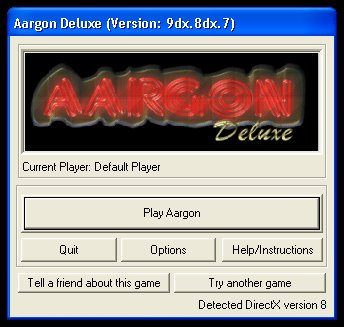
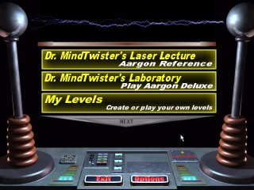

When Aargon Starts you will see the start Dialog. A default player has already been created for you so all you need to do to start is press the play button shown in the image below.

Press 'Play Aargon' to start the game!
The next screen you will see is the "Level Set" selection screen where you can choose which levels you want to play. Each level set is represented by a yellowish button with a description. To begin playing, simply click on one of the buttons. Other level sets will be made available in the future and if you install them they will be added to this list.

Use these controls to select the level pack you want to play
NEXT SECTION : Selecting Skill Level
(back to index)
* Instructions on editing the default player or creating your own player can be found in the section Editing Players and Other Options
** Some Level Sets, such as Custom, can be edited and when you select them the edit button will become available. If you want to know more about editing your own levels read the section Using the Aargon Editor